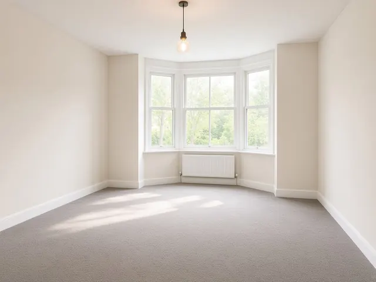
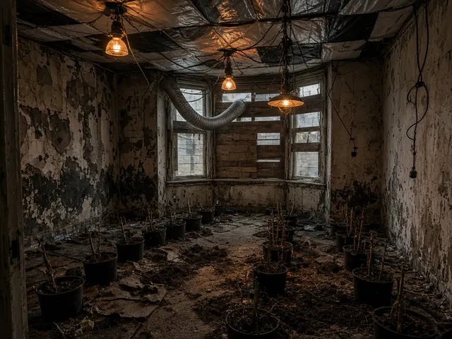
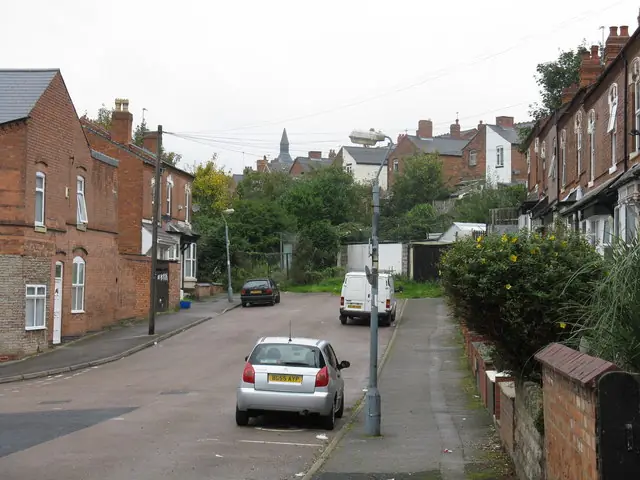

Cannabis farm in your rental? We get it cleared, made safe and repaired.
Cannabis farm removal, clean-up and repairs for landlords and letting agents across Birmingham and the West Midlands. Tell us the postcode and what happened. Hamza calls you back, then introduces up to two specialists we have checked. You deal with them directly and pay them, not us.
- Every firm checked on the Environment Agency waste carrier register before we introduce them
- Photos, waste transfer notes and itemised invoices your insurer and deposit scheme will ask for
- Your details go to no more than two firms, and only after we tell you who they are
Start here: two short steps
Step 1 of 2: the property
Thank you. We have your request.
We aim to call back the same working day. Requests after 5pm are called back the next working day. If you do not hear from us, check your missed calls or ring 07498 603180.
While you wait:
- Do not switch the electricity back on.
- Photograph every room before anything is moved.
- Tell your insurer, in writing if you can.


Before After
Most of the grows we read about are not in warehouses. They are in ordinary terraced houses like these, let to tenants who paid on time until they did not.
The first 48 hours, step by step
This is the order that keeps you safe and keeps your insurance claim intact. The full checklist has the detail.
- Hour 0Get the crime reference and wait for releaseNobody goes in until the officer in the case says the property is released. Note their name.
- Same dayLeave the power off and call 105Most grows steal electricity. Cables can be live even with the fuse box off. The meter is the supplier's, not yours.
- Same dayTell your insurer, then send us the postcodeAsk whether they want a loss adjuster or approved contractors first. We call you back and line up a specialist who covers the area.
- Day 1 to 2Photos before anything movesEvery room, the loft, the meter cupboard. This is your evidence for the insurer and the deposit claim.
- Day 2 to 7Survey, written scope and quoteThe specialist visits or does a video survey, then quotes room by room. You decide. No pressure, no fee to us.
- Week 2 onwardsClear, make safe, dry out, repair, certifyWaste goes with a registered carrier and transfer notes. Electrics are made safe and tested. You get the paperwork at the end.
What we check before we introduce anyone
We would rather tell you what we check than ask you to trust a badge. You can verify most of these yourself.
| Check | How we check it | Can you check it too? |
|---|---|---|
| Waste carrier registration | Searched on the Environment Agency public register | Yes: the public register |
| The business is real | Companies House for limited companies; address and ID for sole traders | Yes, on Companies House |
| Public liability insurance | Copy of the certificate, expiry date recorded | Ask the firm for it |
| Electrical work | Registration with a scheme such as NICEIC or NAPIT, checked on the scheme's register | Yes, on the scheme's website |
| They have done this before | Photos of previous jobs with addresses and faces removed, and their method | Ask to see them |
| Paperwork for insurers | We ask for a sample report: photos, scope, itemised invoice, waste transfer note | You get your own at the end |
What we promise
- We tell you who will contact you before we pass your details on.
- No more than two firms. You will not be flooded with calls.
- Free to you. If a specialist pays us a fee, we say so.
- If a firm we introduced lets you down, tell us. We follow it up and stop introducing them if it was their fault.
What we will not do
- Pretend to be the cleaning or building firm. We are not; we find and check them.
- Give legal or insurance advice. Our guides are general information with sources.
- Publish reviews we cannot verify, or numbers we cannot show you.
- Sell your details or add you to a mailing list.
Who you will deal with
Hamza Yusuf, Birmingham. I read every form and make the call back myself. I am not a cleaner or an electrician. My job is to find out what you are dealing with, check the firms before you meet them, and make sure you end up with the paperwork your insurer will want.
Mercia Property Recovery is an introduction service. How it works and how we are paid.
Recent cases near you
From local and national news. These are not our jobs; they show what West Midlands landlords are dealing with.
- Birmingham. 973 plants across two floors of a building on Fleet Street, Jewellery Quarter. The supply had to be made safe before the clear-up. (BBC News)
- Yardley, Birmingham. A family paid nearly £5,000 to put a let house right, including nearly £3,000 to dig up soil and reconnect the electricity. They said none of it could be claimed on insurance. (Birmingham Live)
- Coventry. A letting agent forced entry over rent arrears and found around 380 plants and a bypassed meter. (The Negotiator)
- Walsall. 1,737 plants seized from a disused factory on Midland Road. (Birmingham Mail)
- Oldbury, Sandwell. Around 200 plants across several rooms of an empty house. The meter had been bypassed. (Birmingham Mail)
What we can arrange
- Cannabis farm removalThe police take the plants and dismantle the grow. They do not put the house right.
- Cannabis farm damage repairClearing a cannabis farm is the cheap part. Getting the property back to a lettable, licensable standard usually means electrical work, damp and mould treatment, building repairs and redecoration.
- Electrical make-safe and rewireElectricity theft is a feature of most cannabis farms. The meter may be bypassed, cables may be run straight from the supply, and new circuits may have been added with no protection.
- Drug house clean-up and needle sweepsWhen a property has been used for drug taking, the danger is often hidden: needles in sofas, under carpets, in loft insulation and behind bath panels. This is not a job for a general cleaner.
- Squatter removal and clearanceThe right approach depends on the type of property and who the occupiers are. Get it wrong and you can end up committing an offence yourself.
- Serious tenant damageNot every crisis is a cannabis farm. Some tenancies end with holes in walls, doors off their hinges, ruined kitchens, rubbish in every room or months of neglect.
Where we cover
All seven West Midlands boroughs, with their own pages for Sutton Coldfield and West Bromwich. Each page covers local licensing rules, recent cases and who to call.
- Cannabis farm removal in BirminghamB1 to B48
- Cannabis farm removal in Sutton ColdfieldB72 to B76
- Cannabis farm removal in SolihullB90 to B94
- Cannabis farm removal in WolverhamptonWV1 to WV11 and WV14
- Cannabis farm removal in CoventryCV1 to CV6, plus parts of CV7 and CV8
- Cannabis farm removal in WalsallWS1 to WS10
- Cannabis farm removal in DudleyDY1 to DY3, DY5, DY6, DY8, DY9, plus B62 and B63
- Cannabis farm removal in SandwellB64 to B71
- Cannabis farm removal in West BromwichB70 and B71, plus parts of B43
Guides for landlords
Plain answers, with the source for every figure.
- Police found a cannabis farm in my rental. What do I do in the first 48 hours?The police have been, the plants have gone, and you are left with a damaged property, a lot of questions and possibly an insurance claim.
- Do the police remove a cannabis farm? What landlords must do nextYes, partly.
- Will landlord insurance pay for cannabis farm damage? The inspection trapSome landlord policies do cover damage from a tenant growing drugs, but the cover often comes with conditions.
- Deposit and damage claims after a cannabis farm or tenant damageYou can claim against the tenancy deposit for cleaning, rubbish removal, repairs and lock changes.
- How much does a cannabis farm clean-up and restoration cost?Every job is different, and the only real price is a written quote after a survey.
- Signs of a cannabis farm in a rental propertyMost landlords who find a cannabis farm say afterwards that there were signs.
Common questions
Is this free?
Yes, for landlords and agents. You pay the specialist for the work, at the price you agree with them. The specialist may pay us a fee for the introduction, which is explained on our About page.
Who will contact me?
Hamza calls you first. If you want to go ahead, we tell you which specialist or specialists cover your postcode, never more than two, and only then pass your details on.
The police have not released the property yet. Should I still get in touch?
Yes. It helps to have someone lined up. But nobody should go in until the officer in the case confirms the property has been released.
My insurer has its own contractors. Do I still need you?
Maybe not. If your insurer is handling everything, follow their process. We are useful when they are not, when a claim is declined, or when part of the work needs doing quickly to make the property safe.
Will the neighbours know?
Often they already do. Ask the specialist about unmarked vehicles and how waste will come out. Firms that do this work are used to being discreet.
It was not a cannabis farm. Can you still help?
Yes, if it is a similar problem: drug use and needles, squatters, or serious damage left by a tenant. Choose the closest option on the form.
Got the keys back and do not know where to start?
Send the postcode and what happened. It takes a minute, and you are not committing to anything.
Get a recovery quote or call 07498 603180